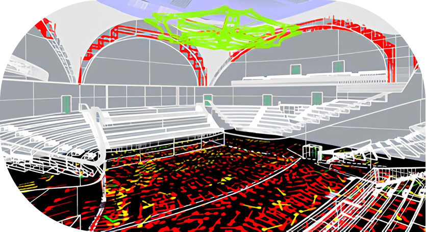
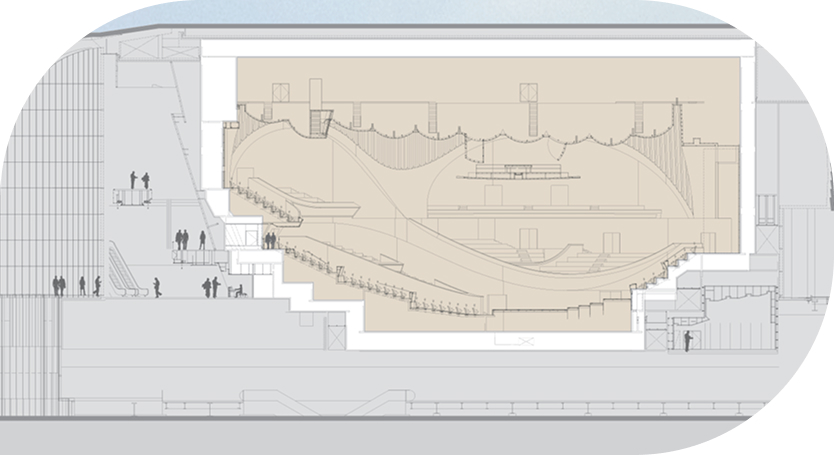
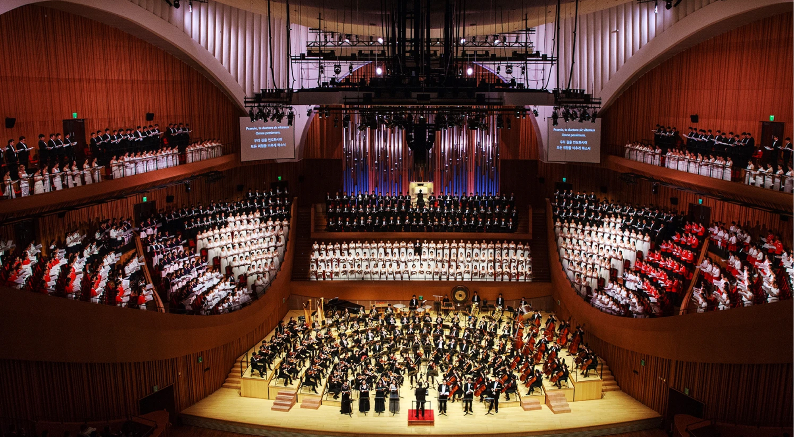
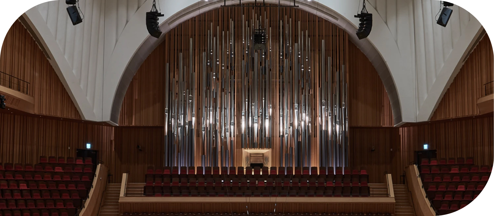

세계 최고 수준의 음향 설계
“나가타 어쿠스틱스”
-

- 새로운 감동을 전하는 압도적인 음향
- 롯데콘서트홀은 일본의 대표 클래식 공연장인 ‘산토리홀’과 미국의 ‘월트디즈니 콘서트홀’, 프랑스의 ‘필하모니 드 파리’ 등 세계적으로 호평 받는 공연장의 음향설계를 총괄한 ‘나가타 어쿠스틱스’가 맡아 세계적 수준의 음향을 구현해 내었습니다. 최상의 음향을 위해 건축설계는 물론 무대마루의 구조, 조명 및 영상 장비의 소음 차단, 흡음률을 고려한 객석의자 제작 등 시설 부분까지도 세심하게 설계하였으며, 특히 나가타社의 핵심 컨설턴트인 ‘야스히사 토요타’가 1/10 스케일 모델 테스트부터 최종 테스트까지 설계 및 시공의 전 과정에 참여하여 최상의 음향을 완성하였습니다. 세계적인 음향의 장인들이 빚어낸 소리의 감동을 롯데콘서트홀에서 느껴 보시기 바랍니다.
-

- 더욱 풍부한 음향을 위한 건축기술 ‘BOX-in-BOX’
- 보다 섬세하고 풍부한 음향을 위한 롯데콘서트홀의 노력은 건축기술에도 적용되었습니다. 공연 감상에 있어 최상의 환경을 제공하고자 국내 공연장 최초로 콘서트홀의 내부 구조(바닥, 벽, 천장)를 외부 구조로부터 완전히 분리한 BOX-in-BOX 구조를 도입하였습니다. 공간 안에 다른 공간을 넣는 BOX-in-BOX 구조는 외부 공간을 이중으로 감싸면서 소음과 진동을 완벽히 차단하여 관객의 공연 몰입도를 높여줍니다. 섬세하게 설계된 명품 콘서트홀에서 탁월한 음향의 즐거움을 만끽하시기 바랍니다.
공연의 몰입도를 높여주는 객석
“빈야드 스타일”

- 어느 위치에서든 완벽한 소리를 전달하는 ‘빈야드 구조의 객석’
- ‘베를린 필하모닉홀’, 프랑스 ‘필하모니 드 파리’, 일본 ‘산토리홀’ 등 세계 유수 콘서트홀의 ‘빈야드(포도밭, 부채꼴 형태)’ 스타일의 객석은 아름다운 디자인과 뛰어난 음향을 자랑합니다. 롯데콘서트홀 역시 세계적 트렌드인 ‘빈야드’ 구조의 객석을 설계하여 무대와 객석의 교감을 높이고 공연 감상의 만족도를 높여 드리고자 합니다. 어떤 자리에서도 뛰어난 음향을 경험할 수 있는 ‘빈야드’ 구조는 국내 최초로 선보이는 롯데콘서트홀만의 자랑입니다.
- 공연의 몰입도를 배려한 ‘2,036석 규모의 음악전용 콘서트홀’
- 롯데콘서트홀은 서울에 두 번째로 건립되는 대규모 음악전용 콘서트홀 입니다. 무대에서 객석으로 멜로디가 퍼지는 느낌을 본떠 붉은 색 계열의 그라데이션으로 디자인한 2,036석의 세련된 객석은 공연을 즐기는 관객으로 하여금 음악의 일부가 되는 특별한 감동을 느끼게 해 드릴 것입니다. 공연장이 관객으로 가득 차게 되면 부드러운 소리의 울림이 줄어드는 현상 또한 객석의 소재와 배치, 설치 등을 통해 보완하였습니다. 작은 소리의 차이가 큰 감동의 차이를 만든다는 것을 알기에 롯데콘서트홀은 디테일 하나까지 세밀하게 설계했습니다. 세련되고 편안한 공간에서 잊지 못할 음악의 감동을 가슴 깊이 느껴보시기 바랍니다.
국내 최초 라운드형 무대 리프트와
“악기의 제왕 파이프 오르간”

- 클래식 공연에 최적화된 무대
- 5,000여 개 파이프의 풍부한 음색, 무대 리프트, 품격 있는 조명이 다채로운 감동을 전합니다.
-
- 국내 콘서트홀 최초로 파이프 오르간 설치
‘68스탑, 5,000여 개의 파이프’ - 오케스트라 선율을 표현하여 '악기의 제왕'이라 불리는 파이프 오르간은 손꼽히는 클래식홀에서만 만날 수 있는 악기입니다. 국내 최초로 '파이프 오르간'이 설치된 클래식 전용홀인 롯데콘서트홀의 파이프 오르간은 오스트리아의 '빈 뮤직페라인 홀'의 파이프를 제작한 'Rieger'(리거)社에서 제작한 것으로 개발부터 설치까지 3년 이상이 소요된 하나의 '작품'입니다. 5,000여 개의 파이프를 통해 68가지(68스탑)의 소리를 구현하는 롯데콘서트홀의 파이프 오르간이 선사하는 아름다운 조형미와 신비롭고 다채로운 소리의 향연을 느껴 보시기 바랍니다.
- 국내 콘서트홀 최초로 파이프 오르간 설치
-
- 다양한 규모의 공연을 넘나드는
‘라운드형 무대 리프트’ - 롯데콘서트홀은 국내 최초로 ‘라운드형 무대 리프트’를 설치하였습니다. 자유자재로 높이를 조절할 수 있는 ‘무대 리프트’는 연주자들의 편의성을 높여줄 뿐만 아니라 독주회, 실내악 등 소규모 공연부터 오케스트라, 합창과 같은 대규모 공연까지 다양한 형태의 클래식 공연을 진행할 수 있어 매우 효율적입니다. 롯데콘서트홀의 무대 리프트는 보다 풍성하고 다채로운 클래식 공연을 선보이기 위한 최상의 설비입니다.
- 다양한 규모의 공연을 넘나드는
-
- 공연의 완성도를 높이는 수준 높은 공연 장비
‘어쿠스틱 배너, 360도 시야각 맞춘 조명’ - 교향곡, 합창곡, 오케스트라 등 어떤 음악을 연주하느냐에 따라 선호하는 ‘잔향’의 길이는 각각 다르고 이는 공연의 완성도에도 영향을 미칠 수 있습니다. 롯데콘서트홀은 섬세한 잔향까지 조절 가능한 ‘어쿠스틱 배너’를 설치하여 공연 특성에 따른 최적의 음향 환경을 조성하였습니다. 롯데콘서트홀은 무대가 객석으로 둘러싸인 형태이기 때문에 조명 역시 이에 맞게 구성하였습니다. 2,700K의 색 온도를 가진 친환경 LED 객석등과 함께 공연장 천장의 음향반사판 내외부를 비롯한 객석 곳곳에 조명을 설치하여 공간의 매력을 최대한 살리고자 하였습니다. ‘편안한 시야’를 선사하는 품격 있는 조명은 클래식 공연의 완성도를 한 단계 끌어올릴 것입니다.
- 공연의 완성도를 높이는 수준 높은 공연 장비